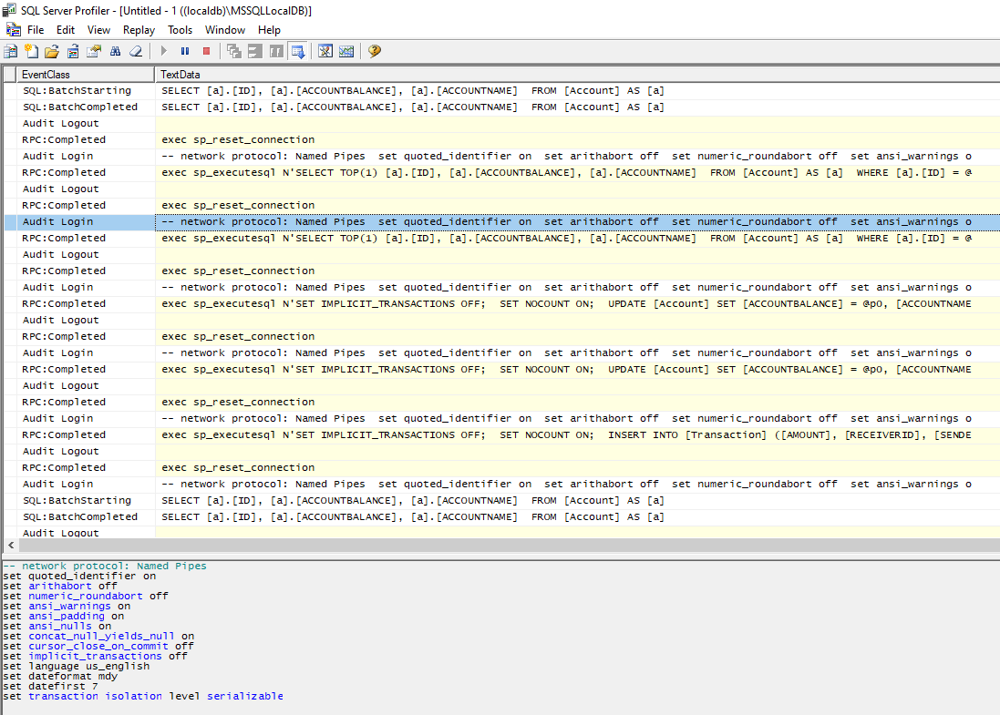

Transaction Scope, .NET Framework ve .NET Core gibi bazı programlama dillerinde bulunan bir sınıftır ve işlemlerin atomikliğini (başarılı veya başarısız tamamlanma garantisi), tutarlılığını (verilerin tutarlı kalması) ve yalıtımını (işlemler arasında birbirini etkileme) sağlamak için kullanılır.
Transaction Scope, birden fazla veritabanı işleminin birleştirilmesine olanak tanır ve bu işlemlerin tamamı ya başarılı bir şekilde tamamlanır ya da hiçbiri tamamlanmaz. Bu, bir işlem veya bir dizi işlemi otomatik olarak geri alma (rollback) özelliği ile birlikte çalışır. Eğer bir işlem başarısız olursa, tüm işlemler geri alınır ve verilerin tutarlılığı korunur.
Transaction Scope, kod yazarken daha az çaba ve daha az hata yapmanızı sağlar, çünkü işlemlerin doğru bir şekilde gerçekleştiğinden emin olursunuz. Ayrıca, Transaction Scope, işlemleri yönetmek için ayrıntılı kod yazmanıza gerek kalmadan, kolayca uygulanabilir bir çözüm sunar.
Özetle, Transaction Scope, birden fazla veritabanı işleminin birleştirilmesini, işlemlerin atomikliğini, tutarlılığını ve yalıtımını sağlayan bir sınıftır.
System.Transactions
isim alanı içerisindeki TransactionScope
sınıfı kullanılarak bir kod blogu tanımlanır.
using (TransactionScope transactionScope = new TransactionScope()){
//-> Yapılmak istenen sql işlemleri bu kod bloğu içerisine yazılır
transactionScope.Complete(); //-> Transaction'ın tamamlandığı belirtir
}
Yukarıdaki kod bloğunun çalışabilmesi için, sayfanıza System.Transactions
isim alanı eklenmelidir.
using System.Transactions;
Yapılmak istenen sorgular sırasıyla bu kod bloğu içerine yazılır. İşlemler tamamlandığında commit edilmesi için transactionScope.Complete();
methodunun çağrılması gerekir.
transactionScope.Complete();
Complete()
methodu kapsamdaki tüm işlemlerin başarıyla tamamlandığını gösterir.
transactionScope.Dispose();
Dispose()
methodu işlem kapsamını sonlandırır.
Entity Framework ile sayfamızda DbContext sınıfını (_context) ismi ile kullanabildiğimizi düşünelim.
private readonly DbContext _context;
public AccountsController(DbContext context)
{
_context = context;
}
Sayfamızın gönderen ve alıcı hesaplar arasında para transaferi yaptığını varsayalım. Bu işlem sırasında veri tutarlılığını korumalı ve başka işlemlerin bu iki hesap üzerinde işlem yapmasını engellemeliyiz, bunun için Transaction Scope içerisinde kodlarımızı yazmalıyız.
Şimdi transaction scope kod bloğu içerisinde veri tutarlılığını koruyacak şekilde birden fazla işlem yapalım.
using (TransactionScope transactionScope = new TransactionScope())
{
try
{
Account? sender = _context.Accounts.Find(transaction.SenderID);
Account? receiver = _context.Accounts.Find(transaction.ReceiverID);
if (sender != null && receiver != null)
{
/**
* 1.İşlem
* Gönderen hesaptan, transfer ücreti düşülüyor
*/
sender.Accountbalance = sender.Accountbalance - transaction.Amount;
_context.Entry(sender).State = EntityState.Modified;
_context.SaveChanges();
/**
* 2.İşlem
* Alıcı hesaba, transfer ücreti ekleniyor
*/
receiver.Accountbalance = receiver.Accountbalance + transaction.Amount;
_context.Entry(receiver).State = EntityState.Modified;
_context.SaveChanges();
/**
* 3.İşlem
* Gönderen ve alıcı işlem id'leri, transfer ücretiyle kayıt ediliyor
*/
Models.Transaction txnRecord = new Models.Transaction();
txnRecord.Senderid = sender.Id;
txnRecord.Receiverid = receiver.Id;
txnRecord.Amount = transaction.Amount;
_context.Entry(txnRecord).State = EntityState.Added;
_context.SaveChanges();
}
transactionScope.Complete();
}
catch(Exception ex)
{
transactionScope.Dispose();
}
}
Yukarıdaki örnekte, ef kullanrak 3 farklı işlemi transaction scope içerisinde yaptık.
Eğer bu üç işlemden birisinde bir hata olursa, bu hata yakalanacak ve transaciton scope bitirilecek, Complete() methoduna ulaşılmadığı için yapılan işlemler rollback yapılacak ve veritabanına yansıtılmayacaktır.
Transaction scope kod bloğu çalıştırıldığı anda, yapılacak işlemler için varsayılan olarak isolation seviyesi (SERIALIZABLE) olarak set edilir.
Complete() methodu çağrılana kadar, yapılan sql işlemleri commit edilmez.
Yapılması istenen sql sorguları çalıştırılırken bir hata ile karşılaşıldığında, önceki işlemler rollback yapılarak geri alınır. Böylece veri tutarlılığı korunmuş olur.
Bir transaction scope kod bloğu oluşturulduğunda varsayılan olarak isolation seviyesi SERIALIZABLE olarak belirtilecektir.
Isolation seviyelerinin ne olduğunu ve ne işe yaradığını şu yazımda bulabilirsiniz:
Blog: SQL Isolation LevelsSQL Server Profiler
uygulaması ile, sql servera gönderilen sql sorgularını izleyebiliriz.
File -> New Trace yolunu izleyip bağlanmak istediğiniz SQL Server giriş bilgilerinizi girerek SQL Server Profiler'ı başlatabililirsiniz.
Transaction Scope içerisinde sorgular başlatıldığı öncelikle isolation seviyesini belirten bir sorgu veritabanına gönderilir.
set transaction isolation level serializable
Komutu ile bu işlem yapılırken isolation seviyesinin serializable
seviyesinde olacağını belirtiyor.
Transaction Scope içerisine girdikten sonra, VS'da debug atıp işlemi beklemeye alalım. SQL Server üzerinden tablomuzu okumaya ve kayıt atmaya çalışalalım.
İki sorgunun da tamamlanmadığını göreceğiz, çünkü işlem yapmak istediğimiz tablonun üzerinde isolation seviyesi serializable
olarak ayarlı durumda, bu isolation seviyesi bizim bu tablomuz üzerinde okuma, yazma ve güncelleme yapmamızı engelliyor.
Reports -> Standart Reports -> Activity - All Blocking Activity
yolu izlenerek bloklanan sql sorguları görüntülenebilir.
VS'da debug işlemini devam ettirdiğimizde ve transaction scope içerisinde çıktığında, bloklanan sql sorgularının çalıştığını göreceğiz.
Bir transaction scope oluşturulduğunda, varsayılan isolation seviyesi (SERIALIZABLE) olarak seçilidir. Ancak TransactionOptions
sınıfı ile bu ayar değiştirilebilir.
Oluşturacağımız transaction scope'un nasıl bir transaction davranışı sergileyeceğini aşağıdaki linkten detaylı olarak öğrenebilirsiniz.
MSDN:TransactionScopeOptionAşağıdaki kod örneğinde, transaction scope'un isolation seviyesini READ COMMITTED
olarak değiştirdik.
var options = new TransactionOptions
{
IsolationLevel = IsolationLevel.ReadCommitted
};
using (TransactionScope transactionScope = new TransactionScope(TransactionScopeOption.Required, options))
{
//-> SomeMethods(); //-> Çalıştırılacak sql sorguları
transactionScope.Complete();
}
Kaynak: https://www.sqlekibi.com/sql-server/sql-server-blocking.html/
Kaynak: https://learn.microsoft.com/tr-tr/dotnet/api/system.transactions.transactionscope?view=net-7.0
Kaynak: https://learn.microsoft.com/en-us/previous-versions/ms172152(v=vs.90)?redirectedfrom=MSDN#managing-transaction-flow-using-transactionscopeoption